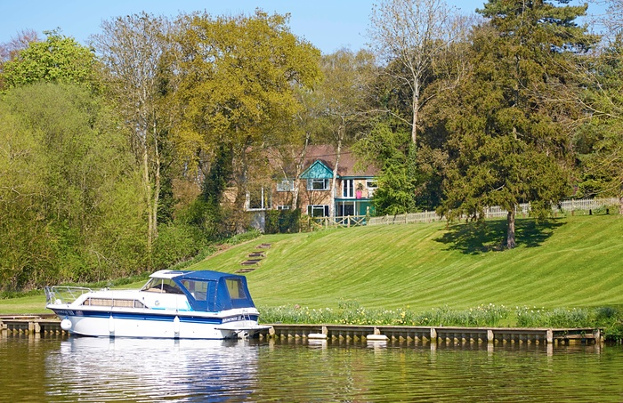

Norfolk Broads Charter
LATEST NEWS
You can keep up to date with all of our latest by liking us on facebook here
ALL NEW MOORINGS
DECEMBER 2012

So after nearly 10 years of service, Blue Ice's Moorings were looking a little bit worse for wear and well in need of a rebuild. So we set aside a day, got the necessary equipment and a fantastic team together and got to work!
We knew from the start that this was never going to be a small job, but trying to construct a brand new set of moorings in such a marshy, waterlogged environment wasn't easy.
However, ten hours off hard labour later and these are the wonderful results!